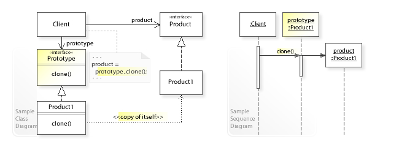

[Design pattern] 1-5. プロトタイプパターン(Prototype pattern)
こんにちは。明月です。
この投稿はデザインパターンのプロトタイプパターン(Prototype pattern)に関する説明です。
プロトタイプはパターンのアルゴリズムはすごく単純なパターンですが、概念的にポインターとスタック、ヒープメモリに関する概念をよく知らないなら理解するのが難しいパターンです。
我々がプログラム上でクラスのインスタンスを生成すると変数にポインターアドレスが格納されるし、ポインターアドレスによりヒープメモリにインスタンスが割り当てすることです。そのため、変数で新しいインスタンスを生成せずに、等号(equal: =)記号で新しい変数名にインスタンスのアドレスをコピーすると二つの変数で一つのインスタンスを指しているので、変数の間でデータの影響に及ぼします。
using System;
namespace Example
{
// 例クラス
class Node
{
// データプロパティ
public int Data { get; set; }
}
class Program
{
// 実行関数
static void Main(string[] args)
{
// インスタンス生成
var node = new Node();
// node.Dataのプロパティに1の値を格納
node.Data = 1;
// 新しい変数を生成してnodeのインスタンスアドレスを格納
var nodeClone = node;
// nodeClone.Dataに2の値を格納
nodeClone.Data = 2;
// この時、node.Dataの値は1なのか2なのか？
Console.WriteLine(node.Data);
// メモリアドレス出力
Console.WriteLine(node.GetHashCode());
Console.WriteLine(nodeClone.GetHashCode());
// 任意のキーを押してください
Console.WriteLine("Press any key...");
Console.ReadLine();
}
}
}
当たり前の話ですが、当然に影響を及ぼします。結果を見るとnode変数とnodeClone変数のメモリアドレスが同じなことを確認できます。

上のイメージみたいな構造で二つの変数に一つのインスタンスを指しているからです。
link - [C#] 11. インスタンスう生成(new)とメモリ割り当て(StackメモリとHeapメモリ)そしてヌル(null)
link - [Java] 10. メモリの割り当て(stackメモリとheapメモリ、そしてnew)とCall by reference(ポインタによる参照)
そうなら逆にそのインスタンスアドレスをコピーせずに、クラスのデータを同じくしてクラスをコピーすることができないだろうか？
上のクラスはすごく単純な構造なのでnew NodeしてDataの値をコピーすることで可能ですが、複雑なクラスだし、メンバー変数がすべてprivateに設定している場合は単純にコピーすることが難しいですね。

reference - https://en.wikipedia.org/wiki/Prototype_pattern
#pragma once
#include <stdio.h>
#include <iostream>
using namespace std;
// 例クラス
class Node {
private:
// メンバー変数
int _data;
public:
// 생성자
Node(int data) {
// メンバー変数にデータを格納する。
this->_data = data;
}
// 出力関数
void print() {
// コンソールに出力
cout << "data = " << this->_data << endl;
}
// プロトタイプ(prototype)のメモリコピー
Node* clone()
{
// 新しいインスタンスをリターン
return new Node(*this);
}
};
// 実行関数
int main() {
// インスタンス生成
Node* node = new Node(1);
// インスタンスをコピー
Node* nodeClone = node->clone();
// 出力関数を呼び出す。
node->print();
nodeClone->print();
// メモリアドレスを出力
cout << node << endl;
cout << nodeClone << endl;
// メモリ解除
delete node;
delete nodeClone;
return 0;
}
C/C++には単純にclone関数で新しいインスタンスを生成するnewキーワードを使ってthisポインターをパラメータに渡すとインスタンスコピーになります。
結果を見るとdataの値は同じですが、メモリアドレスが違うことを確認できます。
// プロトタイプを使うためにはCloneableインターフェースを継承するべき。
class Node implements Cloneable {
// メンバー変数
private int data;
// コンストラクタ
public Node(int data) {
// メンバー変数に値を設定
this.data = data;
}
// 出力関数
public void print() {
// コンソールに出力
System.out.println("data = " + data);
}
// プロトタイプ(prototype)のメモリコピー
public Node clone() {
try {
// メモリコピー
return (Node) super.clone();
} catch (CloneNotSupportedException e) {
// Cloneableインターフェースを継承しないとエラーが発生
return null;
}
}
}
public class Program {
// 実行関数
public static void main(String[] args) {
// インスタンス生成
var node = new Node(1);
// インスタンスコピー
var nodeClone = node.clone();
// 出力関数を呼び出す。
node.print();
nodeClone.print();
// メモリアドレスを出力
System.out.println(node.hashCode());
System.out.println(nodeClone.hashCode());
}
}
Javaの場合はCloneableインターフェースを継承してからプロトタイプ関数のclone関数を使えます。そしてObjectクラスにはclone関数がprotectedのアクセス修飾子で設定されているので、publicに再定義しなければならないです。
Javaもメンバー変数の値は同じことに確認できますが、メモリアドレスは別なので別のインスタンスということを確認できます。
using System;
namespace Example
{
// 例クラス
class Node
{
// メンバー変数
private int data;
// コンストラクタ
public Node(int data)
{
// メンバー変数に値を設定
this.data = data;
}
// 出力関数
public void Print()
{
// コンソールに出力
Console.WriteLine("data = " + this.data);
}
// プロトタイプ(prototype)のメモリコピー
public Node Clone()
{
// Objectクラスにprotected型で存在する。
return this.MemberwiseClone() as Node;
}
}
class Program
{
// 実行関数
static void Main(string[] args)
{
// インスタンス生成
var node = new Node(1);
// インスタンスコピー
var nodeClone = node.Clone();
// 出力関数を呼び出す。
node.Print();
nodeClone.Print();
// メモリアドレスを出力
Console.WriteLine(node.GetHashCode());
Console.WriteLine(nodeClone.GetHashCode());
// 任意のキーを押してください
Console.WriteLine("Press any key...");
Console.ReadLine();
}
}
}

C#にはJavaと違い、別に継承するインターフェースはありません。Javaと同じく、ObjectクラスにMemberwiseCloneの関数がprotectedのアクセス修飾子に設定されているのでpublicに再定義しなければならないです。
結果をみるとメンバー変数の値は同じですが、メモリアドレスが別のことを確認できます。
ここまでデザインパターンのプロトタイプパターン(Prototype pattern)に関する説明でした。
ご不明なところや間違いところがあればコメントしてください。
- [Design pattern] 3-2. 責任の連鎖パターン(Chain of responsibility pattern)2021/11/04 19:27:58
- [Design pattern] 3-1. ストラテジーパターン(Strategy pattern)2021/11/03 18:38:52
- [Design pattern] 2-7. ファサードパターン(Facade pattern)2021/11/02 19:32:31
- [Design pattern] 2-6. プロキシパターン(Proxy pattern)2021/11/01 19:42:44
- [Design pattern] 2-5. フライウェイトパターン(Flyweight pattern)2021/10/29 19:48:27
- [Design pattern] 2-4. デコレーターパターン(Decorator pattern)2021/10/28 20:11:13
- [Design pattern] 2-3. ブリッジパターン(Bridge pattern)2021/10/27 20:32:21
- [Design pattern] 2-2. コンポジットパターン(Composite pattern)2021/10/27 20:30:54
- [Design pattern] 2-1. アダプターパターン(Adapter pattern)2021/10/26 19:12:40
- [Design pattern] 1-5. プロトタイプパターン(Prototype pattern)2021/10/22 19:35:45
- [Design pattern] 1-4. デザインパターンの抽象ファクトリーパターン(Abstract factory pattern)2021/10/15 19:31:03
- [Design pattern] 1-3. ファクトリーメソッドパターン(Factory method pattern)2021/06/23 19:45:37
- [Design pattern] 1-2. ビルダーパターン(Builder pattern)2021/06/11 19:06:28
- [Design pattern] 1-1. シングルトンパターン(Singleton pattern)2021/06/09 19:40:05
- [Design Pattern] デザインパターンの紹介2021/06/08 20:42:36
- [Design pattern] 3-6. ステートパターン(State pattern)2021/11/17 20:04:47
- [Design pattern] 3-5. メメントパターン(Memento pattern)2021/11/16 20:01:36
- [Design pattern] 3-4. イテレータパターン(Iterator pattern)2021/11/15 19:31:28
- [CentOS] Linux環境(CentOS)でCassandra(NoSQL DB)をインストールする方法(DBeaverブラウザでNoSQL使い方)2021/11/12 17:33:58
- [Design pattern] 3-3. コマンドパターン(Command pattern)2021/11/05 17:01:42
- [Window] apache-tomcatでロードバランシング(Load balancing)する方法とセッションクラスタリング（セッション共有）2021/11/05 16:58:45
- [Window] Apacheでmod_jkとmod_proxyの差異、apacheでtomcatのwebsocketのプロキシフォーワードする方法2021/11/05 16:55:05
- [PHP] Apache環境の同じホスト中でPHPとJava(Servlet)を同時に起動、運用する方法2021/11/05 16:52:04
- [C#] 61. ウィンドウフォーム(Window form)でスレッド(Thread)を使い方、クロススレッド問題解決2021/11/04 19:29:51
- [Design pattern] 3-2. 責任の連鎖パターン(Chain of responsibility pattern)2021/11/04 19:27:58
- [Design pattern] 3-1. ストラテジーパターン(Strategy pattern)2021/11/03 18:38:52
- [C#] 60. ウィンドウフォーム(Window form)のイベント設定する方法2021/11/02 21:18:08
- [Design pattern] 2-7. ファサードパターン(Facade pattern)2021/11/02 19:32:31
- [Design pattern] 2-6. プロキシパターン(Proxy pattern)2021/11/01 19:42:44
- [Design pattern] 2-5. フライウェイトパターン(Flyweight pattern)2021/10/29 19:48:27